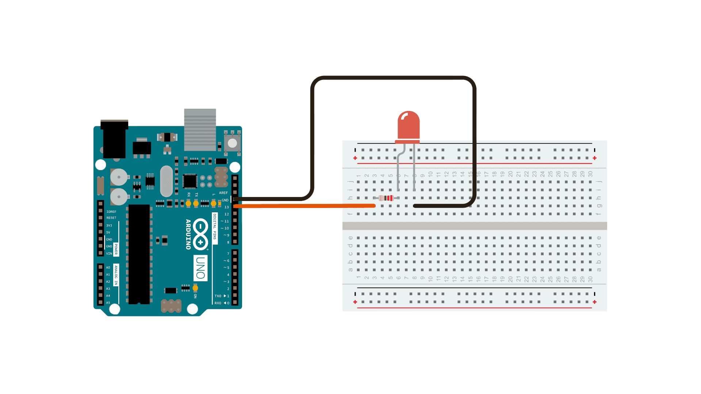

Turn an LED on off every second.
This example shows the simplest thing you can do with an Arduino to see physical output: it blinks the on-board LED.
This example uses the built-in LED that most Arduino board have. This LED is connected to a digital pin and its number may vary from board type to board type. To make your life easier, we have a constant that is specified in every board descriptor file. This constant is LED_BUILTIN and allows you to control the built-in LED easily.
If you want to light an external LED with this sketch, you need to build this circuit, where you connect one end of the resistor to the digital pin corresponded to the LED_BUILTINcontant. Connect the long leg of the LED (the positive leg, called the anode) to the other end of the resistor. Connect the short leg of the LED (the negative leg, called the cathode) to the GND. In the diagram below we show an UNO board that has D13 as the LED_BUILTIN value.
The resistor is essential for safe operation as it limits the current flowing throught the LED, perventing damage to both the LED and the Arduino's output pin. You can choose the resistor value based on the desired current using Ohm's Law (V = IR) where V is the voltage of you board (5V or 3.3V) minus the forward voltage for the LED you are using (typical for red would be 1.8 to 2.2 volts). In this case, using a 220-ohm resistor with an ARduino UNO R3 (a 5V board) limits the current to a safe level for the both the LED and the Arduino pin. Adjusting the resistor value allows you to control the LED's brightness while ensuring safe operation. For 5V boards you can expect the LED to be visible to a resistor value of up to 1K Ohm.
After you build the circuit plug your Arduino board into your computer, start the Arduino Software (IDE) and enter the code below. You may also load it from the menu File/Examples/01.Basics/Blink . The first thing you do is to initialize LED_BUILTIN pin as an output pin with the line
pinMode(LED_BUILTIN, OUTPUT);
In the main loop, you turn the LED on with the line:
digitalWrite(LED_BUILTIN, HIGH);
This supplies 5 volts to the LED an turns it on. You then turn the LED off with the line:
digitalWrite(LED_BUILTIN, LOW);
That takes the LED_BUILTIN pin back to volts, and turns the LED off. In between the on and the off, you want enough time for a person to see the change, so the delay() commands tell the board to do nothing for 1000 milliseconds, or one second. When you use the delay() command, nothing else happens for that amount of time. Once you've understood the basic examples, check out the BlinkWithoutDelay example to learn how to create a delay while doing other things.
void setup() {
// initialize digital pin LED_BUILTIN as an output.
pinMode(LED_BUILTIN, OUTPUT);
}
// the loop function runs over and over again forever
void loop() {
digitalWrite(LED_BUILTIN, HIGH); // turn the LED on (HIGH is the voltage level)
delay(1000); // wait for a second
digitalWrite(LED_BUILTIN, LOW); // turn the LED off by making the voltage LOW
delay(1000); // wait for a second
}